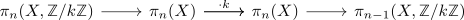
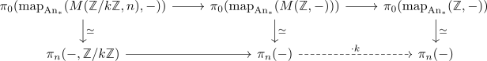

long exact sequence for mod k homotopy groups
Proposition
Let $X$ be an anima, $k \in \mathbb{Z}$. Then there exists a natural long exact sequence

Proof
follows from the cofiber sequence
\begin{align*}
S^n \xrightarrow{\cdot k} S^n \rightarrow M(\mathbb{Z}/k \mathbb{Z},n)
\end{align*}
which induces a fiber sequence
\begin{align*}
\mathrm{map}_{\mathrm{An}_*}(M(\mathbb{Z}/ k \mathbb{Z}, n),-) \rightarrow \mathrm{map}_{\mathrm{An}_*}(M(\mathbb{Z},-)) \rightarrow \mathrm{map}_{\mathrm{An}_*}(\mathbb{Z},-)
\end{align*}
In particular, it induces a long exact sequence (cf. long exact sequence of a fiber sequence in pointed Anima).

where we may identify the dashed map with multiplication by $k$